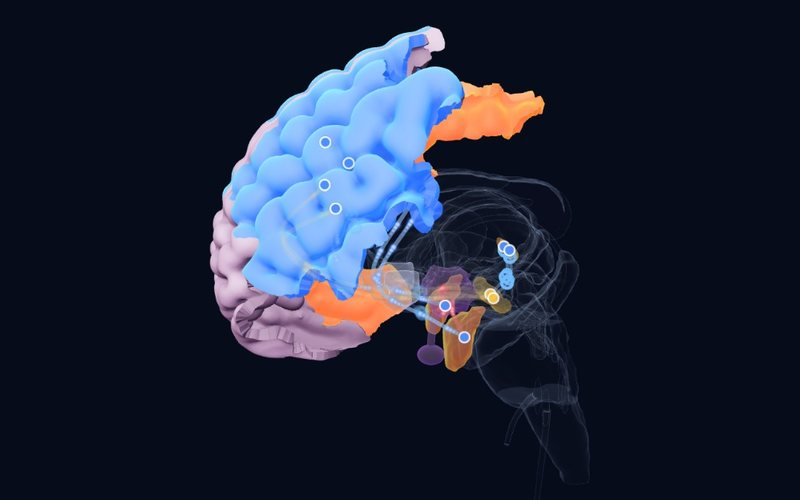
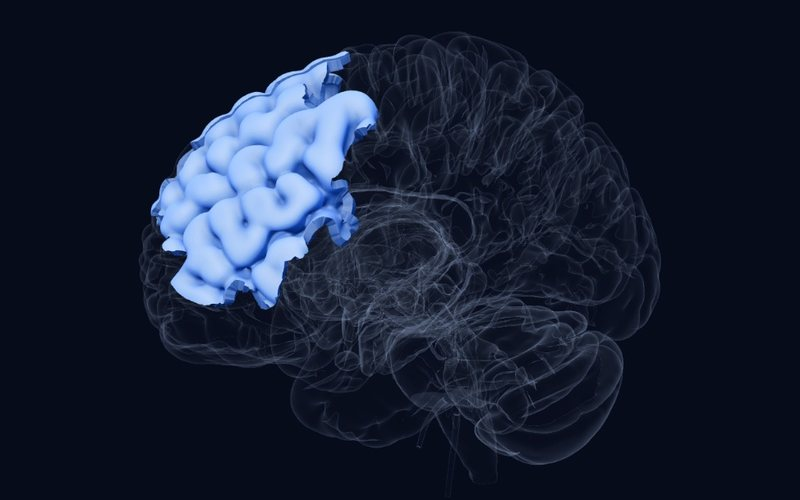

Bülten · Sayı 4 · 30 Ekim 2026
Kriz anı, hızlı yardım ve yalnızlığın devresi
Bu sayı ergenlikte duygusal krizin üç yüzüne bakıyor: intihar krizindeki gence hastane dışında nasıl yardım edilebileceği, depresyonda iki haftada etki gösteren bir beyin uyarımı yöntemi ve hayal kırıklığının irritabl gençlerde ödül öğrenmesini nasıl bozduğu. Nörobilim köşesinde ise yalnızlığın neden hem kaygıyı hem de insanlara yönelme isteğini artırabildiğini açıklayan bir devre var.
Bu haftanın çalışmaları
BSistematik derleme, meta‑analizCurrent Psychiatry Reports2026
İntihar krizindeki gence hastane dışında yardım: kriz hizmetleri ne kadar işe yarıyor?
15 çalışma, 15 kriz müdahalesi
AyrıntılarKapat

Atlas
Bulgu
Ağır depresyon, intihar düşüncesi ya da kendine zarar verme nedeniyle akut krize giren çocuk ve ergenler için 15 kriz müdahalesini değerlendiren 15 çalışma derlendi. Kısa ve yapılandırılmış dört müdahale intihar düşüncesini, girişimlerini ve acil başvurularını azalttı. Aile odaklı yedi müdahale aile içi iletişimi ve bütünlüğü güçlendirip hastaneye yatışları azalttı; toplum hizmetlerine bağlantı kuran üç müdahale bakımın sürekliliğini artırdı.
Neden önemli
Gencin kendi ortamında, aileyi de içine alan yoğun destek, bazı durumlarda yatışa umut verici bir alternatif olabilir. Kriz anında ailenin rolünün ne kadar belirleyici olduğunu bir kez daha gösteriyor.
Sınırlılık
Kanıt büyük ölçüde gözlemsel ve heterojen; yazarların da belirttiği gibi nedensel sonuç çıkarılamıyor.
Díaz-Téllez C, Peñuelas-Calvo I, Alacreu-Crespo A, et al. Crisis Interventions for Children and Adolescents with Depression and Suicidality: A Systematic Review and Meta-Analysis. Current Psychiatry Reports. 2026. doi:10.1007/s11920-026-01722-z
CRandomize kontrollü çalışmaBMC Psychiatry2026
Ergen depresyonunda on günlük beyin uyarımı: hızlı ve bir ay süren etki
Akut majör depresyonu olan 61 ergen (yüksek doz iTBS ya da sham)
AyrıntılarKapat

Atlas
Bulgu
Akut depresyondaki 61 ergen, sol dorsolateral prefrontal kortekse iki hafta boyunca günde bir seans yüksek doz aralıklı teta patlaması uyarımı (iTBS) ya da sham uyarım alacak şekilde rastgele ayrıldı. On günün sonunda iTBS grubunda depresyon (HAMD-24; d = 0,71) ve intihar düşüncesi (d = 0,67) puanları sham grubundan anlamlı olarak düşüktü. Fark bir ay sonra da sürüyordu (d = 0,96 ve 0,76); kaygı puanlarında ise iki grup arasında fark yoktu. Aile işlevselliği zayıf olan ergenlerde tedaviden sağlanan yarar daha azdı.
Neden önemli
Ergende ilaç dışı ve hızlı etkili bir seçeneğe kontrollü veri ekliyor; atlasın depresyon merceğindeki sol DLPFC TMS hedefiyle doğrudan örtüşüyor. Aile işlevselliği bulgusu, birinci çalışmayla aynı noktaya işaret ediyor.
Sınırlılık
Tek merkezli, küçük örneklemli ve tek kör bir çalışma; deneme kaydı geriye dönük yapılmış.
Yang Y, Ye Q, Peng Z, et al. Rapid and robust effects of high-dose intermittent Transcranial Brain Stimulation (iTBS) on depression and suicidal ideation in adolescents with acute major depression: a 10-day randomised, controlled, single-blind trial. BMC Psychiatry. 2026. doi:10.1186/s12888-026-08452-9
CKesitsel çalışma, deneysel çalışmaBiological Psychiatry: Cognitive Neuroscience and Neuroimaging2026
Hayal kırıklığı, irritabl gençlerin beyninde ödül sinyalini tersine çeviriyor
88 genç (ortalama yaş 14,4; %49 kız)
AyrıntılarKapat
 Atlas
Atlas
Bulgu
İrritabilite düzeyi farklı 88 genç, fMRI sırasında çocuklara uyarlanmış olasılıksal bir ödül öğrenme görevini yaptı; her denemedeki ödül öngörü hatası pekiştirmeli öğrenme modeliyle hesaplandı. Hayal kırıklığı uyandırılmadan önce irritabilite arttıkça ventral striatum ve pallidumda ödül öngörü hatası ile beyin etkinliği arasındaki bağ güçleniyordu. Hayal kırıklığından sonra bu örüntü tersine döndü: irritabl gençlerde ventral striatum, pallidum ve sağ insulada ödül sonuçları daha zayıf kodlandı. Orbitofrontal korteks ve sol insulada ilişki bulunmadı.
Neden önemli
İrritabiliteyi duruma bağlı bir ödül öğrenmesi bozulması olarak gösteren ilk çalışma: sorun yalnızca öfkede değil, hayal kırıklığı anında öğrenmenin durmasında olabilir. Hayal kırıklığına tepkiyi hedefleyen müdahaleler için bir hedef öneriyor.
Sınırlılık
Tek görev ve tek oturumluk bir hayal kırıklığı uyarımı; bulguların günlük yaşamdaki irritabiliteye ne kadar karşılık geldiği bilinmiyor.
Korom M, Burk D, Givens T, et al. Frustration Induction Alters Reward Prediction Error Encoding in Pediatric Irritability. Biological Psychiatry: Cognitive Neuroscience and Neuroimaging. 2026. doi:10.1016/j.bpsc.2026.10.005
CHayvan çalışmasıNeuron2026
Yalnızlığın paradoksu: hem kaygıyı hem de insanlara yönelmeyi artıran bir devre
Erişkin erkek fareler
AyrıntılarKapat
 Atlas
Atlas
Bulgu
Araştırmacılar erişkin erkek farelerde "karşılaştırmalı sosyal yoksunluk" modeli kurdu; bu model, insandaki yalnızlığa benzer biçimde kaygıyı ve sosyal tercihi birlikte artırdı. Medial preoptik alandaki GABA nöronları, Kv4.3 potasyum kanalının azalmasıyla aşırı uyarılabilir hâle geliyor ve bu nöronların etkinliği değiştirildiğinde davranış iki yönde de değişiyordu. Bu nöronlar dorsal raphe serotonin nöronlarını doğrudan baskılıyor; sosyal yoksunlukla güçlenen bu baskılayıcı yol, davranış değişikliklerine aracılık ediyordu.
Neden önemli
Yalnızlığın çelişkili görünen örüntüsüne, yani hem kaygılanıp hem de başkalarına daha çok yönelmeye, hipotalamus ile serotonin sistemi arasında nedensel bir devre öneriyor. Sosyal kopukluğun kaygı bozuklukları için neden güçlü bir risk etkeni olduğunu düşündürüyor.
Sınırlılık
Yalnızca erkek farelerde yapılmış bir hayvan modeli; insandaki yalnızlığa doğrudan taşınamaz.
Zhang YY, Hu MT, Xie SZ, et al. A GABAergic preoptic-raphe circuit mediates paradoxical coupling of anxiety and social preference after comparative social deficit. Neuron. 2026. doi:10.1016/j.neuron.2026.09.032
Haftanın yapısı

Beyin Sapı
Locus Coeruleus
Beynin ana noradrenalin kaynağı: uyanıklığı, dikkati ve stres yanıtını ayarlar; küçük bir çekirdekten neredeyse tüm beyne yayılır.
Okura soru
Kriz anındaki gencin yanında olmak çoğu zaman aileye düşüyor; sizin çalıştığınız yerde aileyi krize hazırlayan, sonrasında da yanında kalan bir yapı var mı?
Yanıtınızı e-postayla gönderebilirsiniz:
[email protected]Kaynaklar
- Díaz-Téllez C, Peñuelas-Calvo I, Alacreu-Crespo A, et al. Crisis Interventions for Children and Adolescents with Depression and Suicidality: A Systematic Review and Meta-Analysis. Current Psychiatry Reports. 2026. doi:10.1007/s11920-026-01722-z
- Yang Y, Ye Q, Peng Z, et al. Rapid and robust effects of high-dose intermittent Transcranial Brain Stimulation (iTBS) on depression and suicidal ideation in adolescents with acute major depression: a 10-day randomised, controlled, single-blind trial. BMC Psychiatry. 2026. doi:10.1186/s12888-026-08452-9
- Korom M, Burk D, Givens T, et al. Frustration Induction Alters Reward Prediction Error Encoding in Pediatric Irritability. Biological Psychiatry: Cognitive Neuroscience and Neuroimaging. 2026. doi:10.1016/j.bpsc.2026.10.005
- Zhang YY, Hu MT, Xie SZ, et al. A GABAergic preoptic-raphe circuit mediates paradoxical coupling of anxiety and social preference after comparative social deficit. Neuron. 2026. doi:10.1016/j.neuron.2026.09.032
Bu bülten eğitim amaçlıdır, tıbbi tavsiye değildir; tanı ve tedavi kararları için hekiminize danışın. Özetler çalışmaların özetlerinden ve açık erişimli tam metinlerden kendi cümlelerimizle hazırlanmıştır; ayrıntı ve kesin sonuç için makalenin kendisine bakın.
Kanıt düzeyi (atlastakiyle aynı): A büyük konsorsiyum, meta-analiz ya da düzenleyici karar; B tekrarlanmış çalışmalar ya da klasik vaka; C tek ya da öncü çalışma. Ön baskılar hakemden geçmemiştir.